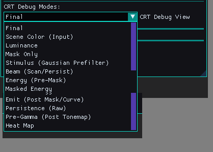
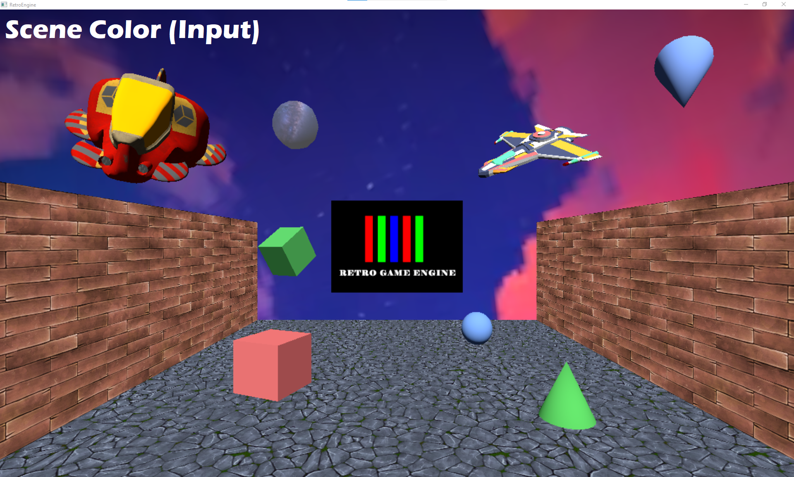
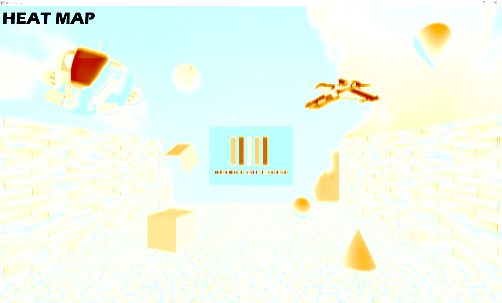
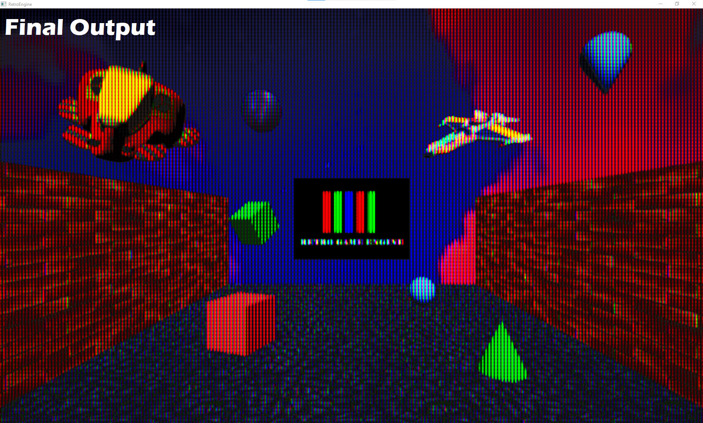
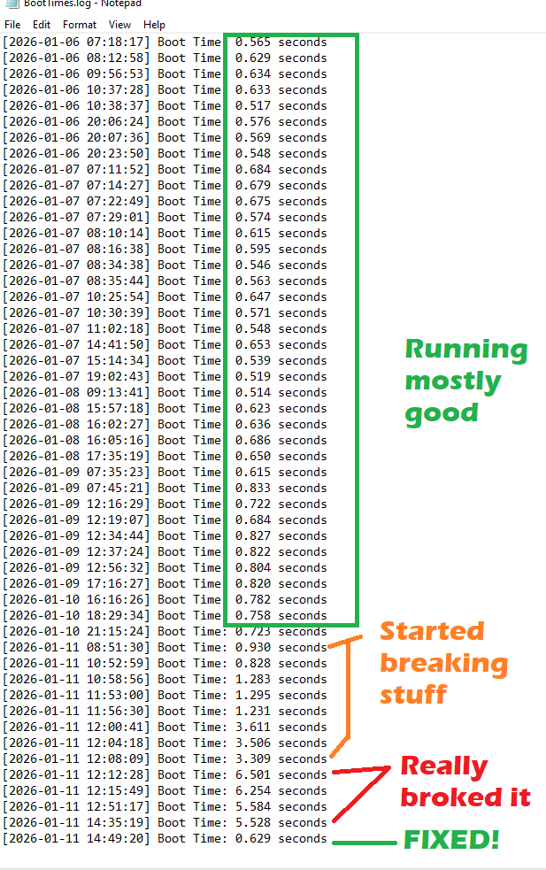
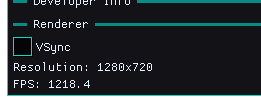

Time to Clean Up the CRT Pipeline
After the previous dev log, it was time to stop adding features and seriously look at the CRT render pipeline itself.
Things mostly worked. The output looked good. But there were growing signs that parts of the system were fragile, opaque, or behaving in ways that were hard to reason about.
Some parameters in the editor seemed to do nothing. Others only worked in combination with hidden dependencies. Resolution changes could subtly break the image.
Most importantly, I felt like I was often guessing.
If RetroEngine is going to simulate a CRT (not just apply a post-process) then I need to be able to prove what each stage is doing.
From Final Image to Inspectable Pipeline
The first major change was introducing formal CRT debug views.
Instead of relying on the final image alone, the renderer can now display individual stages of the CRT simulation like:
- input scene color
- beam stimulus (pre-mask)
- energy before and after masking
- final emission
- raw persistence buffer

This immediately changed how the system could be worked on.
The pipeline stopped being a black box. Problems became visible instead of theoretical.

Energy Is Not Light
With debug views in place, one important distinction became obvious.
Energy is not the same thing as visible light.
The CRT beam deposits energy continuously across the surface. Phosphors decide where that energy becomes light.
That explains a lot of earlier confusion.
Mask gaps can exist mathematically while energy still flows nearby. Visibility is enforced later.
Once viewed this way, the model started to make sense instead of feeling inconsistent.

Fixing the Mask: Phosphors Are a Hard Gate
The most important visual bug came from treating the phosphor mask as a soft multiplier instead of a physical constraint.
Light was being reintroduced after nonlinear shaping and persistence, which caused mask gaps to fill in over time.
That is not how a CRT works.
The fix was simple but fundamental:
No phosphor means no light.
A hard phosphor presence gate was added at the final emission stage. If a phosphor does not exist at that location, nothing can glow, persist, or bloom there.
This single change resolved multiple downstream issues at once.

Persistence That Behaves Like Persistence
With masking corrected, the persistence pass could finally be evaluated properly.
Persistence now operates only on emitted light, not raw beam energy.
This guarantees that:
- black mask gaps stay black
- bright objects leave trails, dark areas do not
- motion feels temporal, not smeared
The result is subtle, but correct. Which is exactly what persistence should be.
Performance Regression Caught Early
During this work, startup time suddenly doubled. Then tripled.
Nothing else had changed. No new assets. No new systems.
The reason this didn’t spiral out of control is simple: RetroEngine logs boot time from initialization to first rendered frame.
That made the regression impossible to ignore.
The issue was traced to unnecessary shader-side work that was running during startup and was optimized.
Boot time returned to normal immediately.
This kind of instrumentation isn’t glamorous, but it prevented a slow creep that would have been far harder to fix later.

Uncapped FPS and Real Stress Testing
One small but important editor improvement also landed during this cleanup.
VSync can now be toggled directly from the editor.

That allows testing with the frame rate fully uncapped.
On simple scenes, the renderer easily exceeds 1200 FPS.
That kind of headroom is invaluable when testing CRT behavior under extreme temporal conditions.
If something breaks at 1200 FPS, it will definitely break at 60.
Why This Matters
None of this work was about adding new features.
It was about removing ambiguity.
The CRT pipeline is now:
- observable instead of guesswork
- physically grounded instead of layered effects
- stable under resolution and timing changes
From here, adding things like CRT profiles, presets, or artistic tuning becomes straightforward, because the foundation is solid.
Seeing It in Motion
To close this out, here’s a short capture cycling through multiple scenes while switching CRT debug modes in real time.
This is the moment where everything finally clicked.
The renderer isn’t hiding its behavior anymore. It’s explaining itself.